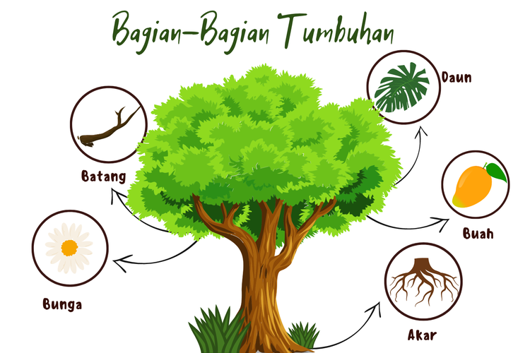

Tumbuhan
Dalam biologi, Tumbuhan adalah organisme eukariota multiseluler yang tergolong ke dalam kerajaan Plantae. Di dalamnya terdiri atas beberapa klad yakni, tanaman berbunga, Gymnospermae atau Tumbuhan berbiji terbuka, Lycopodiopsida, paku-pakuan, lumut, serta sejumlah alga hijau.

Bagian Bagian Tumbuhan
tumbuhan memiliki beberapa bagian, adapun bagian bagian itu adalah, Akar adalah bagian tumbuhan yang umumnya terdapat pada bagian bawah tumbuhan. Bagian ini biasanya terkubur di dalam tanah atau media tanam lainnya.
Daun adalah bagian tumbuhan yang memiliki peranan penting. Pada daun berwarna hijau, terdapat kandungan zat klorofil yang merupakan salah satu bahan yang dibutuhkan pada proses fotosintesis.
Batang pada tanaman adalah tempat tumbuhnya ranting.
Bunga memiliki bentuk yang sangat variatif dan berwarna-warni, memberikan daya tarik untuk menarik perhatian kupu-kupu dan serangga untuk hinggap dan membantu proses penyerbukan.
Fakta Tentang Tumbuhan
Tumbuhan adalah makhluk hidup Tumbuhan adalah makhluk hidup yang memiliki sel, Tumbuhan mampu berkembang biak, Mampu beradaptasi dengan lingkungan, dan Mampu bereaksi terhadap rangsangan
Tumbuhan memiliki peran penting bagi kehidupan, Tumbuhan mampu menghasilkan oksigen
Tumbuhan dapat menyerap karbon dioksida dan Menyerap polutan, Tumbuhan juga dapat Menjadi sumber makanan bagi makluk hidup disekitar nya.